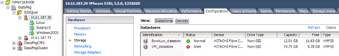

ESXi 主机的多路径验证
提供者
在外部 LUN 导入（ Foreign LUN Import ， FLI ）过程中，您应验证主机上是否已配置多路径并正常运行。
对 ESXi 主机完成以下步骤。
-
使用 VMware vSphere Client 确定 ESXi 和虚拟机。

-
确定要使用 vSphere Client 迁移的 SAN LUN 。

-
确定要迁移的 VMFS 和 RDM （ vfat ）卷：
esxcli storage filesystem listMount Point Volume Name UUID Mounted Type Size Free ------------------------------------------------- ----------------- ----------------------------------- ------- ------ ----------- ----------- /vmfs/volumes/538400f6-3486df59-52e5-00262d04d700 BootLun_datastore 538400f6-3486df59-52e5-00262d04d700 true VMFS-5 13421772800 12486443008 /vmfs/volumes/53843dea-5449e4f7-88e0-00262d04d700 VM_datastore 53843dea-5449e4f7-88e0-00262d04d700 true VMFS-5 42681237504 6208618496 /vmfs/volumes/538400f6-781de9f7-c321-00262d04d700 538400f6-781de9f7-c321-00262d04d700 true vfat 4293591040 4269670400 /vmfs/volumes/c49aad7f-afbab687-b54e-065116d72e55 c49aad7f-afbab687-b54e-065116d72e55 true vfat 261853184 77844480 /vmfs/volumes/270b9371-8fbedc2b-1f3b-47293e2ce0da 270b9371-8fbedc2b-1f3b-47293e2ce0da true vfat 261853184 261844992 /vmfs/volumes/538400ef-647023fa-edef-00262d04d700 538400ef-647023fa-edef-00262d04d700 true vfat 299712512 99147776 ~ #

如果 VMFS 具有扩展 \ （跨区 VMFS\ ），则应迁移跨区中的所有 LUN 。要在图形用户界面中显示所有扩展，请转到 " 配置 ">" 硬件 ">" 存储 " ，然后单击数据存储库以选择 " 属性 " 链接。
迁移后，在将其重新添加到存储时，您将看到多个具有相同 VMFS 标签的 LUN 条目。在此情景中，您应要求客户仅选择标记为 HEAD 的条目。
-
确定要迁移的 LUN 和大小：
esxcfg-scsidevs -cDevice UID Device Type Console Device Size Multipath PluginDisplay Name mpx.vmhba36:C0:T0:L0 CD-ROM /vmfs/devices/cdrom/mpx.vmhba36:C0:T0:L0 0MB NMP Local Optiarc CD-ROM (mpx.vmhba36:C0:T0:L0) naa.60060e801046b96004f2bf4600000014 Direct-Access /vmfs/devices/disks/naa.60060e801046b96004f2bf4600000014 20480MB NMP HITACHI Fibre Channel Disk (naa.60060e801046b96004f2bf4600000014) naa.60060e801046b96004f2bf4600000015 Direct-Access /vmfs/devices/disks/naa.60060e801046b96004f2bf4600000015 40960MB NMP HITACHI Fibre Channel Disk (naa.60060e801046b96004f2bf4600000015) ~~~~~~ Output truncated ~~~~~~~ ~ #
-
确定要迁移的原始设备映射（ Raw Device Mapping ， RDM ） LUN 。
-
查找 RDM 设备： ` find /vmfs/volumes -name **-rdf+`
/vmfs/volumes/53843dea-5449e4f7-88e0-00262d04d700/Windows2003/Windows2003_1-rdmp.vmdk /vmfs/volumes/53843dea-5449e4f7-88e0-00262d04d700/Windows2003/Windows2003_2-rdm.vmdk /vmfs/volumes/53843dea-5449e4f7-88e0-00262d04d700/Linux/Linux_1-rdm.vmdk /vmfs/volumes/53843dea-5449e4f7-88e0-00262d04d700/Solaris10/Solaris10_1-rdmp.vmdk
-
从上述输出中删除 -rdmp 和 -RDM ，然后运行 vmkfstools 命令以查找 VML 映射和 RDM 类型。
# vmkfstools -q /vmfs/volumes/53843dea-5449e4f7-88e0-00262d04d700/Windows2003/Windows2003_1.vmdk vmkfstools -q /vmfs/volumes/53843dea-5449e4f7-88e0-00262d04d700/Windows2003/Windows2003_1.vmdk Disk /vmfs/volumes/53843dea-5449e4f7-88e0-00262d04d700/Windows2003/Windows2003_1.vmdk is a Passthrough Raw Device Mapping Maps to: vml.020002000060060e801046b96004f2bf4600000016444636303046 ~ # vmkfstools -q /vmfs/volumes/53843dea-5449e4f7-88e0-00262d04d700/Windows2003/Windows2003_2.vmdk Disk /vmfs/volumes/53843dea-5449e4f7-88e0-00262d04d700/Windows2003/Windows2003_2.vmdk is a Non-passthrough Raw Device Mapping Maps to: vml.020003000060060e801046b96004f2bf4600000017444636303046 ~ # vmkfstools -q /vmfs/volumes/53843dea-5449e4f7-88e0-00262d04d700/Linux/Linux_1.vmdk Disk /vmfs/volumes/53843dea-5449e4f7-88e0-00262d04d700/Linux/Linux_1.vmdk is a Non-passthrough Raw Device Mapping Maps to: vml.020005000060060e801046b96004f2bf4600000019444636303046 ~ # vmkfstools -q /vmfs/volumes/53843dea-5449e4f7-88e0-00262d04d700/Solaris10/Solaris10_1.vmdk Disk /vmfs/volumes/53843dea-5449e4f7-88e0-00262d04d700/Solaris10/Solaris10_1.vmdk is a Passthrough Raw Device Mapping Maps to: vml.020004000060060e801046b96004f2bf4600000018444636303046 ~ #
直通是物理 \ （ RDMP\ ）的 RDM ，非直通是虚拟 \ （ RDMV\ ）的 RDM 。由于 VM Snapshot 增量 vmdk 指向具有陈旧 naa ID 的 RDM ，具有虚拟 RDM 和 VM Snapshot 副本的 VM 将在迁移后中断。因此，在迁移之前，请客户删除此类 VM 中的所有 Snapshot 副本。右键单击 VM ，然后单击 Snapshot -\> Snapshot Manager Delete All 按钮。有关在 NetApp 存储上对 VMware 进行硬件加速锁定的详细信息，请参见 NetApp 知识库 3013935 。
-
确定 LUN naa 到 RDM 设备的映射。
~ # esxcfg-scsidevs -u | grep vml.020002000060060e801046b96004f2bf4600000016444636303046 naa.60060e801046b96004f2bf4600000016 vml.020002000060060e801046b96004f2bf4600000016444636303046 ~ # esxcfg-scsidevs -u | grep vml.020003000060060e801046b96004f2bf4600000017444636303046 naa.60060e801046b96004f2bf4600000017 vml.020003000060060e801046b96004f2bf4600000017444636303046 ~ # esxcfg-scsidevs -u | grep vml.020005000060060e801046b96004f2bf4600000019444636303046 naa.60060e801046b96004f2bf4600000019 vml.020005000060060e801046b96004f2bf4600000019444636303046 ~ # esxcfg-scsidevs -u | grep vml.020004000060060e801046b96004f2bf4600000018444636303046 naa.60060e801046b96004f2bf4600000018 vml.020004000060060e801046b96004f2bf4600000018444636303046 ~ #
-
确定虚拟机配置：
esxcli storage filesystem listgrep VMFS/vmfs/volumes/538400f6-3486df59-52e5-00262d04d700 BootLun_datastore 538400f6-3486df59-52e5-00262d04d700 true VMFS-5 13421772800 12486443008 /vmfs/volumes/53843dea-5449e4f7-88e0-00262d04d700 VM_datastore 53843dea-5449e4f7-88e0-00262d04d700 true VMFS-5 42681237504 6208618496 ~ #
-
记录数据存储库的 UUID 。
-
创建 /etc/vmware/hostd/vmInventory.xml 的副本，并记下文件和 vmx 配置路径的内容。
~ # cp /etc/vmware/hostd/vmInventory.xml /etc/vmware/hostd/vmInventory.xml.bef_mig ~ # cat /etc/vmware/hostd/vmInventory.xml <ConfigRoot> <ConfigEntry id="0001"> <objID>2</objID> <vmxCfgPath>/vmfs/volumes/53843dea-5449e4f7-88e0-00262d04d700/Windows2003/Windows2003.vmx</vmxCfgPath> </ConfigEntry> <ConfigEntry id="0004"> <objID>5</objID> <vmxCfgPath>/vmfs/volumes/53843dea-5449e4f7-88e0-00262d04d700/Linux/Linux.vmx</vmxCfgPath> </ConfigEntry> <ConfigEntry id="0005"> <objID>6</objID> <vmxCfgPath>/vmfs/volumes/53843dea-5449e4f7-88e0-00262d04d700/Solaris10/Solaris10.vmx</vmxCfgPath> </ConfigEntry> </ConfigRoot> -
确定虚拟机硬盘。
迁移后需要此信息才能按顺序添加已删除的 RDM 设备。
~ # grep fileName /vmfs/volumes/53843dea-5449e4f7-88e0-00262d04d700/Windows2003/Windows2003.vmx scsi0:0.fileName = "Windows2003.vmdk" scsi0:1.fileName = "Windows2003_1.vmdk" scsi0:2.fileName = "Windows2003_2.vmdk" ~ # grep fileName /vmfs/volumes/53843dea-5449e4f7-88e0-00262d04d700/Linux/Linux.vmx scsi0:0.fileName = "Linux.vmdk" scsi0:1.fileName = "Linux_1.vmdk" ~ # grep fileName /vmfs/volumes/53843dea-5449e4f7-88e0-00262d04d700/Solaris10/Solaris10.vmx scsi0:0.fileName = "Solaris10.vmdk" scsi0:1.fileName = "Solaris10_1.vmdk" ~ #
-
确定 RDM 设备，虚拟机映射和兼容模式。
-
使用上述信息，记下与设备，虚拟机，兼容模式和顺序的 RDM 映射。
稍后在将 RDM 设备添加到 VM 时，您将需要此信息。
Virtual Machine -> Hardware -> NAA -> Compatibility mode Windows2003 VM -> scsi0:1.fileName = "Windows2003_1.vmdk" -> naa.60060e801046b96004f2bf4600000016 -> RDM Physical Windows2003 VM -> scsi0:2.fileName = "Windows2003_2.vmdk" -> naa.60060e801046b96004f2bf4600000017 -> RDM Virtual Linux VM -> scsi0:1.fileName = “Linux_1.vmdk” -> naa.60060e801046b96004f2bf4600000019 -> RDM Virtual Solaris10 VM -> scsi0:1.fileName = “Solaris10_1.vmdk” -> naa.60060e801046b96004f2bf4600000018 -> RDM Physical
-
确定多路径配置。
-
在 vSphere Client 中获取存储的多路径设置：
-
在 vSphere Client 中选择 ESX 或 ESXi 主机，然后单击配置选项卡。
-
单击 * 存储 * 。
-
选择数据存储库或映射的 LUN 。
-
单击 * 属性 * 。
-
在属性对话框中，根据需要选择所需的块区。
-
单击 * 块区设备 * > * 管理路径 * ，然后在管理路径对话框中获取路径。

-
-
从 ESXi 主机命令行获取 LUN 多路径信息：
-
登录到 ESXi 主机控制台。
-
运行 esxcli storage nmp device list 以获取多路径信息。
# esxcli storage nmp device list naa.60060e801046b96004f2bf4600000014 Device Display Name: HITACHI Fibre Channel Disk (naa.60060e801046b96004f2bf4600000014) Storage Array Type: VMW_SATP_DEFAULT_AA Storage Array Type Device Config: SATP VMW_SATP_DEFAULT_AA does not support device configuration. Path Selection Policy: VMW_PSP_RR Path Selection Policy Device Config: {policy=rr,iops=1000,bytes=10485760,useANO=0; lastPathIndex=3: NumIOsPending=0,numBytesPending=0} Path Selection Policy Device Custom Config: Working Paths: vmhba2:C0:T1:L0, vmhba2:C0:T0:L0, vmhba1:C0:T1:L0, vmhba1:C0:T0:L0 Is Local SAS Device: false Is Boot USB Device: false naa.60060e801046b96004f2bf4600000015 Device Display Name: HITACHI Fibre Channel Disk (naa.60060e801046b96004f2bf4600000015) Storage Array Type: VMW_SATP_DEFAULT_AA Storage Array Type Device Config: SATP VMW_SATP_DEFAULT_AA does not support device configuration. Path Selection Policy: VMW_PSP_RR Path Selection Policy Device Config: {policy=rr,iops=1000,bytes=10485760,useANO=0; lastPathIndex=0: NumIOsPending=0,numBytesPending=0} Path Selection Policy Device Custom Config: Working Paths: vmhba2:C0:T1:L1, vmhba2:C0:T0:L1, vmhba1:C0:T1:L1, vmhba1:C0:T0:L1 Is Local SAS Device: false Is Boot USB Device: false naa.60060e801046b96004f2bf4600000016 Device Display Name: HITACHI Fibre Channel Disk (naa.60060e801046b96004f2bf4600000016) Storage Array Type: VMW_SATP_DEFAULT_AA Storage Array Type Device Config: SATP VMW_SATP_DEFAULT_AA does not support device configuration. Path Selection Policy: VMW_PSP_RR Path Selection Policy Device Config: {policy=rr,iops=1000,bytes=10485760,useANO=0; lastPathIndex=1: NumIOsPending=0,numBytesPending=0} Path Selection Policy Device Custom Config: Working Paths: vmhba2:C0:T1:L2, vmhba2:C0:T0:L2, vmhba1:C0:T1:L2, vmhba1:C0:T0:L2 Is Local SAS Device: false Is Boot USB Device: false naa.60060e801046b96004f2bf4600000017 Device Display Name: HITACHI Fibre Channel Disk (naa.60060e801046b96004f2bf4600000017) Storage Array Type: VMW_SATP_DEFAULT_AA Storage Array Type Device Config: SATP VMW_SATP_DEFAULT_AA does not support device configuration. Path Selection Policy: VMW_PSP_RR Path Selection Policy Device Config: {policy=rr,iops=1000,bytes=10485760,useANO=0; lastPathIndex=1: NumIOsPending=0,numBytesPending=0} Path Selection Policy Device Custom Config: Working Paths: vmhba2:C0:T1:L3, vmhba2:C0:T0:L3, vmhba1:C0:T1:L3, vmhba1:C0:T0:L3 Is Local SAS Device: false Is Boot USB Device: false naa.60060e801046b96004f2bf4600000018 Device Display Name: HITACHI Fibre Channel Disk (naa.60060e801046b96004f2bf4600000018) Storage Array Type: VMW_SATP_DEFAULT_AA Storage Array Type Device Config: SATP VMW_SATP_DEFAULT_AA does not support device configuration. Path Selection Policy: VMW_PSP_RR Path Selection Policy Device Config: {policy=rr,iops=1000,bytes=10485760,useANO=0; lastPathIndex=1: NumIOsPending=0,numBytesPending=0} Path Selection Policy Device Custom Config: Working Paths: vmhba2:C0:T1:L4, vmhba2:C0:T0:L4, vmhba1:C0:T1:L4, vmhba1:C0:T0:L4 Is Local SAS Device: false Is Boot USB Device: false naa.60060e801046b96004f2bf4600000019 Device Display Name: HITACHI Fibre Channel Disk (naa.60060e801046b96004f2bf4600000019) Storage Array Type: VMW_SATP_DEFAULT_AA Storage Array Type Device Config: SATP VMW_SATP_DEFAULT_AA does not support device configuration. Path Selection Policy: VMW_PSP_RR Path Selection Policy Device Config: {policy=rr,iops=1000,bytes=10485760,useANO=0; lastPathIndex=1: NumIOsPending=0,numBytesPending=0} Path Selection Policy Device Custom Config: Working Paths: vmhba2:C0:T1:L5, vmhba2:C0:T0:L5, vmhba1:C0:T1:L5, vmhba1:C0:T0:L5 Is Local SAS Device: false Is Boot USB Device: false
-
 请求文档变更
请求文档变更 在 GitHub 上编辑
在 GitHub 上编辑 提供者指南
提供者指南